APC 技術ブログ
https://techblog.ap-com.co.jp/
株式会社エーピーコミュニケーションズの技術ブログです。
フィード

Chapter 6｜第70回 「セキュリティを強くすればよい」ではない？利便性とのバランス
APC 技術ブログ
「Securityを強くするなら、できるだけ多くBlockすればよい」 一見すると正しそうです。 しかし、業務で必要なApplicationまで使いにくくなれば、Userは別の方法を探したり、問い合わせが増えたりします。逆に利便性だけを優先して広くAllowすれば、Riskが大きくなる可能性があります。 実務の設計では、Securityだけを最大化するのではなく、User ExperienceとOperationsを含めて成立する形を探す必要があります。 Chapter 6の最後は、そのBalanceを考えます。 まず結論。良い設計はSecurity・UX・Operationsの3つが回る 一…
3時間前
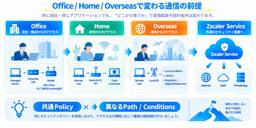
Chapter 6｜第69回 拠点・在宅・海外で設計はどう変わる？
APC 技術ブログ
同じ会社のUserなら、同じZscaler設定をそのまま使えばよいのでしょうか。 OfficeではCorporate Networkを使い、自宅では家庭用Wi-FiとISPを使い、海外では現地のInternet事情や規制の影響を受けます。 利用するApplicationが同じでも、通信が始まる場所と経路が違えば、設計上の前提も変わります。 この回では、Office・Home・Overseasの3場面から、設計条件の違いを整理します。 まず結論。Policyを揃えても、Traffic Pathまで同じとは限らない 一言でいうと、 拠点・在宅・海外では、Internetへの出方、Traffic F…
3時間前
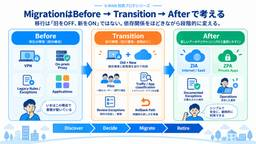
Chapter 6｜第68回 VPNやProxyからZscalerへ移行するとき、何が難しい？
APC 技術ブログ
「いまのVPNをZPAへ置き換える」 「いまのProxyをZIAへ切り替える」 言葉だけなら、とても単純に聞こえます。 しかし既存のVPNやProxyは、長年の運用の中で多くのRule、例外、業務依存を抱えています。 誰も使っていないと思っていたBypassが実は月末処理に必要だった。特定ApplicationだけProxyを経由しない。古いSystemがIPベースの通信を前提にしている。 こうした見えにくい依存関係が、移行を難しくします。 まず結論。難しいのは製品交換ではなく「既存の前提をほどくこと」 一言でいうと、 VPN / ProxyからZscalerへの移行では、既存設定をそのまま新…
3時間前
Chapter 6｜第67回 なぜ最初から全社展開しない？Pilotの意味
APC 技術ブログ
「設定もできた。検証環境でも動いた。では来週から全社員へ展開しよう」 一見すると効率的です。 しかし、実際の企業環境には、設計時に見えていなかったApplication、特殊な端末、独自の業務手順、在宅・拠点ごとのNetwork差などがあります。 そこで本番展開の前に使われるのがPilotです。 Pilotは「念のため少人数で試す期間」ではありません。 設計と現実の差を見つけ、次の展開へ反映するための学習フェーズです。 まず結論。Pilotは「合格試験」ではなく「設計を育てる場」 一言でいうと、 Pilotの目的は、少人数で成功を証明することではなく、代表的な利用環境で技術面・業務面の想定外を…
3時間前

Chapter 6｜第66回 Client Connectorの展開では何を考える？
APC 技術ブログ
Client Connectorを100台、1,000台、1万台へ入れるとき、単に「Installできれば終わり」でしょうか。 少人数の検証端末では問題なくても、全社にはWindowsとmacOS、異なるOS Version、VPN Client、EDR、拠点Network、在宅勤務、利用Applicationなど、さまざまな条件があります。 そのためClient Connectorの展開は、Installerを配布する作業ではなく、端末・Network・Userへの影響を確認しながら対象を広げる設計として考える必要があります。 まず結論。展開設計は「配り方」より「影響をどう小さく確認するか」…
3時間前
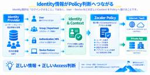
Chapter 6｜第65回 なぜ認証・Identity設計が重要なの？
APC 技術ブログ
では、Identity ProviderとSAMLを設定してLoginできれば、Identity設計は終わるのでしょうか。実際には、それだけでは足りません。 ZscalerのPolicyではUser、Group、Device PostureなどをAccess判断に利用できます。元のUser / Group情報が古い、Group粒度が粗い、退職者情報が反映されない状態では、細かなPolicyを作っても期待どおりになりにくくなります。 今回は認証方式そのものではなく、「どのIdentity情報を、どのPolicy判断へ使うか」という設計視点で整理します。 まず結論。Identityは「Loginの…
3時間前
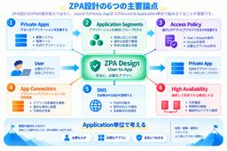
Chapter 6｜第64回 ZPAの設計では何を考える？
APC 技術ブログ
ZPAを導入するとき、「VPNの代わりにZPAを入れる」と考えるだけでは設計の本質を見失いやすくなります。 ZPAでは、どのUserを、どのPrivate Applicationへ接続させるかをApplication単位で考えます。 そのため、既存VPNのRouteやSubnetをそのまま再現するのではなく、Private App、Application Segment、App Connector、DNS、Access Policy、可用性を一つの設計として組み立てます。 今回はZPAの設定方法ではなく、何を整理してからApplication Accessへ落とし込むのかを見ていきます。 まず…
3時間前
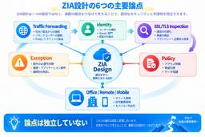
Chapter 6｜第63回 ZIAの設計では何を考える？
APC 技術ブログ
ZIAを導入するとき、「WebをZscalerへ送れば終わり」ではありません。 インターネットやSaaSへの通信をどのようにZIAへ転送するのか。その通信を誰のものとして識別し、どのような検査やポリシーを適用するのか。 こうした設計項目を関連付けて考えることが、ZIA設計では重要です。 ただし、これらは設計時に検討する項目であり、ZIA内部で実際に通信が処理される順序を示したものではありません。 今回は個別の設定値ではなく、ZIA設計で何を決めなければならないのかを俯瞰します。 まず結論。ZIA設計は「Traffic・Identity・Inspection・Policy・Exception」を…
3時間前
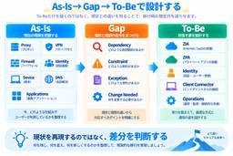
Chapter 6｜第62回 なぜ現状調査が重要？As-Isを知らずに設計できない理由
APC 技術ブログ
Zscaler導入では、理想の構成図を描く前にやることがあります。 それがAs-Is（現状）の把握です。 既存のProxy、VPN、Firewall、Identity Provider、端末管理、DNS、Application配置。 これらを十分に確認せず、「これからはZIAとZPAを使う」とTo-Beだけを描いてしまうと、移行時に思わぬ影響が出ることがあります。 たとえば、長年利用されているPACファイルに、特定の業務システムだけプロキシを経由しない設定が残っている場合があります。 また、VPNに接続しなければ社内のDNSサーバーへ問い合わせられないアプリケーションや、既存プロキシの動作を前…
3時間前

Chapter 6｜第61回 Zscaler導入では最初に何を決めるの？
APC 技術ブログ
Zscalerを導入すると決まったとき、最初に考えることは何でしょうか。 「ZIAをどう設定するか」 「ZPAのApplication Segmentをどう切るか」 「Client Connectorをどう配布するか」 こうした話から始めたくなります。 しかし、設計の出発点は製品機能ではありません。 何を守りたいのか。誰が、どこから、何を使うのか。今の環境にどんな制約があるのか。 この前提が曖昧なまま設定を決めると、後から「この業務だけ使えない」「海外拠点だけ経路が違う」「認証方式が合わない」といった問題が表面化しやすくなります。 Chapter 6では、設定方法ではなく設計者が何を考えている…
3時間前
【GitLab】GitLab Secrets Managerを使ってみた
APC 技術ブログ
こんにちは、クラウド事業部 CI/CD導入支援サービスチームの西野です。 2026年10月15日にリリースされたGitLab 19.5で、GitLab Secrets Managerが一般提供（GA）されました。 about.gitlab.com 本機能は、GitLab Premium/Ultimateプランで利用が可能です。GitLab.com、GitLab self-managedどちらにも対応しています。 本記事では、GitLab Secrets Managerについての機能紹介、実際に使ってみた検証結果をご紹介します。 目次 目次 これまでのGitLabにおけるシークレット管理の課題 …
1日前

基礎から理解するMicrosoft Foundry②～Models編～
APC 技術ブログ
目次 目次 はじめに 1. Microsoft FoundryのModelsとは？ 1-1. モデルカタログとは？ 1-2. モデルのデプロイについて 2. モデルのデプロイ方式について 2-1. Global Standard 2-2. Data Zone Standard 2-3. Standard 2-4. Provisioned系 2-5. Batch系 3. モデルを選ぶ際のポイント 3-1. 回答品質・推論性能 3-2. コスト 3-3. レスポンス速度 3-4. 利用できる機能とリージョン 4. モデルのパラメーターについて 4-1. Temperature 4-2. Max O…
2日前
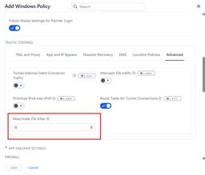
【Zscaler】ユーザーにZCCをオフにさせない！悩める情シスのためのお助け機能3選
APC 技術ブログ
目次 はじめに ① 制限力：低 オフにしても自動でオンに戻す ② 制限力：中 オフにする際にパスワードを求める ③ 制限力：高 ログインするまでインターネットアクセスを制限する 3つの機能の使い分け おわりに 参考文献 はじめに こんにちは！iTOC事業部 0-WAN 阿部です。 「通信が遅いから」「サイトにアクセスできないから」と、ユーザーがZscaler Client Connector（以下、ZCC）をオフにしてしまい、対応に頭を悩ませている情シス担当者様も多いのではないでしょうか。 トラブルの切り分けのために一時的にオフにしたつもりが、そのまま戻し忘れてしまうケースもあるかと思います。…
3日前

GitHub Copilot と Claude Code のローカルサンドボックスを同じスクリプトで比べてみた
APC 技術ブログ
こんにちは。ACS事業部の越川です。 社内で受けた質問 なぜサンドボックスが必要なのか 同じスクリプトで試した 検証の条件 結果 gh だけが通らなかった Windows では既定のままだとコマンドが動かなかった GitHub Copilot を導入するときに設定しておきたいこと 1. サンドボックスを有効にする 2. 外への通信を絞る 3. サンドボックスの外での実行を禁止する 4. macOS で gh を使うなら証明書を信頼させる 5. Windows ではローカルネットワークを許可するか決める Claude Code との違い クラウドで動かすという選択肢 まとめ 参考 ACS 事業部…
4日前
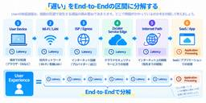
Chapter 5｜第60回 「Zscalerが遅い」は本当？遅延を分解して考える
APC 技術ブログ
「Zscalerを入れてから遅くなった気がする」。 Performanceの問い合わせではこうした声が出ます。 ただし、「Zscalerを経由している」ことと「Zscalerが遅延の原因である」ことは同じではありません。 UserがApplicationを操作して結果が返るまでには、端末、Wi-Fi、LAN、ISP、Internet経路、Zscaler Service Edge、接続先SaaS / Applicationなど、複数の区間があります。 Chapter 5の最後は、「遅い」という一つの症状をEnd-to-Endで分解する考え方を整理します。 まず結論。体感速度はネットワークの遅延だ…
6日前
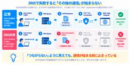
Chapter 5｜第59回 DNSが原因のトラブルはなぜ見つけにくい？
APC 技術ブログ
Webサイトや社内アプリにつながらないとき、ファイアウォールやポリシー、接続先サーバーだけでなく、DNSによる名前解決も原因候補になります。 FQDNで接続先を指定する場合、必要な名前解決に失敗すると、接続先のIPアドレスを取得できず、対象サーバーへ接続できないことがあります。 それでも利用者から見える症状は、ほかの接続障害と同じ「つながらない」です。 今回はZIA・ZPAの違いも踏まえ、名前解決と接続先への通信を分けて考えます。 まず結論。名前解決と、接続先への通信を分ける DNSは、接続先の名前からIPアドレスなどの情報を調べる仕組みです。 たとえば、明示プロキシを使わずにWebサイトへ接…
6日前
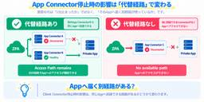
Chapter 5｜第58回 App Connectorが止まると何が起きる？
APC 技術ブログ
ZPAでPrivate AppへAccessできなくなったとき、Application Serverが正常でも、途中にいるApp Connectorが使えないと接続は成立しません。 では、App Connectorが1台停止したら、ZPA全体が使えなくなるのでしょうか。 答えは、構成次第です。 複数のApp Connectorが同じApplicationへ到達できるように設計されていれば、1台の停止がそのままApplication停止になるとは限りません。 一方、そのApplicationへ到達できるConnectorが実質1台しかなければ、その1台の停止が大きな影響になります。 今回は冗長化…
6日前

Chapter 5｜第57回 ZPAで特定の社内アプリだけつながらないとき、何を疑う？
APC 技術ブログ
「ZPA自体は使えている。ほかの社内アプリも開く。でも、このアプリだけつながらない」。 この状況では、Client Connector全体やZPA Service全体が止まっている可能性だけを追い続けても、原因に近づきにくいことがあります。 なぜなら、ほかのZPA Applicationが正常という事実は、User側の共通経路が少なくとも一部では成立していることを示すからです。 そこで視点を、 「ZPA全体」から「そのApplicationだけに関係する要素」 へ移します。 今回はApplication定義、DNS、Access Policy、App ConnectorからApplicatio…
6日前

Chapter 5｜第56回 Client Connectorが接続できないとき、何が起きている？
APC 技術ブログ
「Client Connectorが赤い」「接続済みにならない」「ZIAやZPAが使えない」。 利用者から見ると、どれも「Client Connectorがつながらない」という一つの症状です。 しかしClient Connectorが正常状態になるまでには、端末そのもの、Internet接続、DNS、Authentication、Zscaler Serviceへの到達性、App Profileなど、複数の要素が関わります。 そのため、アプリだけを見ていても原因を絞れないことがあります。 今回は復旧手順ではなく、Client Connectorの正常状態が何に依存するかを分解します。 まず結論。…
6日前

Chapter 5｜第55回 認証が何度も繰り返される「認証ループ」はなぜ起きる？
APC 技術ブログ
UserがLogin画面で認証する。 成功したように見える。 ところが、また同じLogin画面へ戻される。 もう一度認証しても、また戻る――。 このような「認証ループ」は、利用者から見ると単純に「Loginできない」現象です。 しかし裏側では、Browser、Zscaler、Identity Provider（IdP）、CookieやSessionなど、複数の要素が連携してAuthenticationを成立させています。 どこか一つで状態が正しく引き継がれないと、「まだ認証されていない」と判断され、再びAuthenticationが始まることがあります。 今回は、認証ループを一つの製品の問題と…
6日前
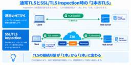
Chapter 5｜第54回 SSL Inspectionをするとサイトが壊れることがあるのはなぜ？
APC 技術ブログ
「SSL/TLS Inspectionを有効にしたら、今まで使えていたサイトやアプリが動かなくなった」 この現象は、なぜ起きるのでしょうか。 第26回では、HTTPS通信を検査するために、ZIAがTLS通信を途中で復号し、Security Check後に再び暗号化する考え方を学びました。 この仕組みは暗号化されたTrafficを検査するうえで重要です。 一方で、WebサイトやApplicationの一部は、通信の途中にProxyが入ることを想定していないSecurity仕様を持つ場合があります。 その代表例がCertificate Pinningです。 今回は「Inspectionが悪い」「例…
6日前

Chapter 5｜第53回 特定のWebサイトだけ見られないのはなぜ？
APC 技術ブログ
「GoogleもMicrosoft 365も見られるのに、このサイトだけ開かない」 前回の「Webサイトが全部見られない」とは、かなり状況が違います。 ZIA経由で通信していることを確認できた複数のWebサイトが正常なら、その通信に使われた端末のネットワークやZIAへの共通経路は、少なくとも一部では機能していると考えられます。 そのため今度は、そのWebサイトだけに関係する条件へ視点を移します。 URL Category、URL Filtering Policy、SSL/TLS Inspection、Webサイト側のCertificateや通信仕様などです。 今回は、全体障害と個別サイト障害を…
6日前

Chapter 5｜第52回 Webサイトが全部見られないとき、どこに原因がありそう？
APC 技術ブログ
「特定のサイトだけ」ではなく、Webサイトがほぼ全部見られない。 この症状が出ると、「ZIAが止まっているのでは？」と考えたくなります。 しかし、すべてのWebアクセスに共通する部分はZIAだけではありません。 端末のネットワーク、Client Connectorの接続状態、ZIAまでの到達性、必要な名前解決、認証、共通ポリシーなどに問題があると、複数のWebサイトに同時にアクセスできなくなる場合があります。通信を運ぶ経路だけでなく、その通信に必要な処理や設定も確認対象です。 今回は、影響範囲が広いときは共通経路から考えるという切り分けの基本を扱います。 まず結論。「全部NG」なら、各サイトよ…
6日前

Chapter 5｜第51回 「Zscalerにつながらない」とき、エンジニアは最初に何を考える？
APC 技術ブログ
「Zscalerにつながらないです」 運用をしていると、こうした問い合わせを受けることがあります。 ただし、この一言だけでは原因は分かりません。 端末のインターネット接続が切れているのか、DNSで名前解決できていないのか、Client Connectorが正常に動いていないのか、認証で止まっているのか、ポリシーで拒否されているのか、あるいは接続先のWebサイトやアプリ側に問題があるのか。 同じ「つながらない」でも、原因候補は複数あります。 Chapter 5では、設定手順を覚えるのではなく、通信を分解して原因候補を絞るエンジニアの考え方を身につけます。 まず結論。「Zscalerが悪い」ではな…
6日前
【Zscaler】Entra IDのSAML署名証明書を更新する｜ZIAへの反映から認証確認まで
APC 技術ブログ
Microsoft Entra IDとZIAをSAML連携している環境で、署名証明書を期限前に更新する手順を紹介します。新しい証明書の作成、ZIAへの登録・Activate、Entra IDでの切り替え、再認証による確認方法と切り戻しを解説します。
8日前

SIEM導入のハードルが下がる？Microsoft Defender ISOCを調べてみた
APC 技術ブログ
目次 目次 はじめに SIEM導入はなぜ重かったのか ISOCとは 提供条件 「手軽」の範囲を整理する コスト ISOCのセットアップ 前提条件 ワークスペースの作成 データコネクタの導入 ISOCで使える機能 ケース管理 ワークブック 自動化 Automatic Attack Disruption Content as Code Perceptionエージェント エージェントの一覧 標準のプレイブック 使い方と統制 制限 参考 Defender for Cloudのアラートとの関係 運用の進め方（筆者の見立て） 導入時の注意点 結びに ACS 事業部のご紹介 はじめに こんにちは。ACS事業…
9日前
【NetBox連載 第1弾】NetBoxとは？ネットワーク管理の「Source of Truth」を解説
APC 技術ブログ
本シリーズについて: NetBoxを検討する方向けの連載の第1弾です。今後、有償版「NetBox Enterprise」、SaaS版「NetBox Cloud」、自動収集機能（Discovery / Assurance）の解説を順次公開予定です。 1. NetBoxとは 歴史と開発体制 2. なぜ「台帳」が問題になるのか 3. Source of Truth という考え方 4. NetBoxで管理できるもの（機能総覧） 4-1. 組織・設備（DCIM） 4-2. アドレス・ネットワーク（IPAM） 4-3. その他のコア機能 4-4. 拡張性 5. NetBoxが「やらないこと」 6. データ…
10日前
GitHub Copilot AppからAzureを操作する「Azure Canvases」を試してみる
APC 技術ブログ
目次 目次 はじめに Azure Canvasesとは Azure Canvasesで利用できる機能 Azure Resources Query Azure Resources Queryを使ってみる 1. Azure CLIを準備する 2. GitHub Copilot AppからPluginをインストールする 3. Azureリソースを検索する Azure Cost Health Check Azure Cost Health Checkを使ってみる Azure Functions Hosted Skills Canvas Hosted Skills Canvasを使ってみる Azure …
11日前
WSLでもデバイスコードに逃げない：ブラウザ経由で az login する方法（GitHub Copilot CLI の MCP認可にも）
APC 技術ブログ
目次 目次 はじめに なぜWSLでブラウザが開かないのか WSL上でブラウザ経由でAzure CLIにログインする BROWSER環境変数にwslviewを設定する xdg-openをwslviewへのシンボリックリンクにする az loginを実行する 補足：GitHub Copilot CLIでMCPのOAuth認可をする まとめ ACS 事業部のご紹介 はじめに こんにちは。ACS事業部の折田です。 WSL上で az login を実行してもブラウザが開かず、「それならデバイスコードで認証しよう」と az login --use-device-code に切り替えてしまった経験はないでし…
12日前